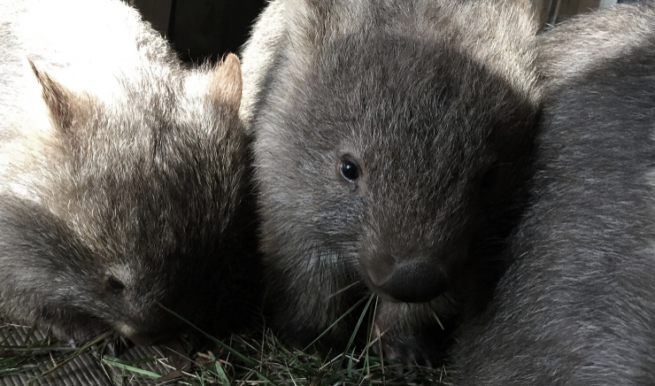
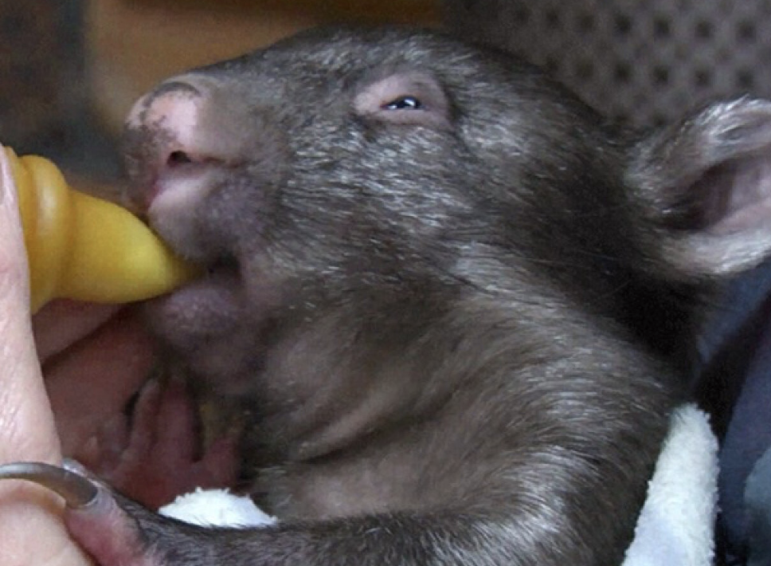

<!DOCTYPE html>
<html>
  <head>
    <meta charset="utf-8">
    <meta name="viewport" content="width=device-width">
    <title>WPSA</title>
    <link href="style.css" rel="stylesheet" type="text/css" />
    <link rel="icon" href="whitelogo.png">

  <link href='https://fonts.googleapis.com/css?family=Jost' rel='stylesheet'>
  <link href="https://fonts.googleapis.com/css2?family=Jost:wght@600&display=swap" rel="stylesheet">
  </head>
  <body>
  
</div>
    <script src="script.js"></script>
  </body>
</html>

<div> 
  <nav class="navigation-bar">
    
   <a href="Donate.html">Donate</a>
   <a href="Contact.html">Contact</a>
   <a href="News.html">News</a>
   <a href="About.html">About</a>
   <a href="index.html">Home</a>


  </nav>
</div>

<div>
  
  <div id="about-text">
    <h1> Latest News </h1>

    <h3> Killing of Wombats Overturned in VIC </h3>
    <p> 15.5.2020 </p>
    <br>


    <p>WPSA have been campaigning to amend an outdated law in Victoria that allowed 193 parishes to indiscriminately cull wombats without a permit.

    As of 6 February 2020, the Wildlife Act 1975 has been amended, officially revoking this outdated law. Wombats in Victoria now receive the same protection as other native Australian animals.

    This is a good step forward. Thank you to everyone who stood with us to help overturn this outdated law! 

    WPSA will continue to campaign for the protection of wombats. We will continue to pursue a change in policy that requires valid proof of agricultural loss and attempt at alternative forms of management before any property owner is issued a permit.</p>
    <br><br>
    <h3> Bushfires </h3>
    <p> 1.1.2020 </p>
    

    <p>This new year we face the enormity of the bushfires that have scorched our country. The skies are still smoke filled, fires still burn – and animals have suffered and perished in unknowable numbers.

    To date, an estimated 1.25 billion animals have been killed across Australia. The true toll will be far higher, as surviving animals die of injuries, homelessness, thirst and hunger. These includes so many of our iconic species, like koalas and wombats.

    Our organisation’s focus is protecting wombats. The rehabilitation, research and conservation work done at WPSA has never been more important. Our challenge now is to help wombats survive. </p>

<br> <br>

    </div>   


    


<div class="footer">
  <div class="footertext">
  <p>Contact Us:<p>
  <p>info@wombatprotection.org.au <br>
  telephone: 0448 087 994
  <br><br><br>
  PO Box 2191<br>
  Tomerong NSW 2540 <br>
  Australia</p> 
  </div>

</div>
